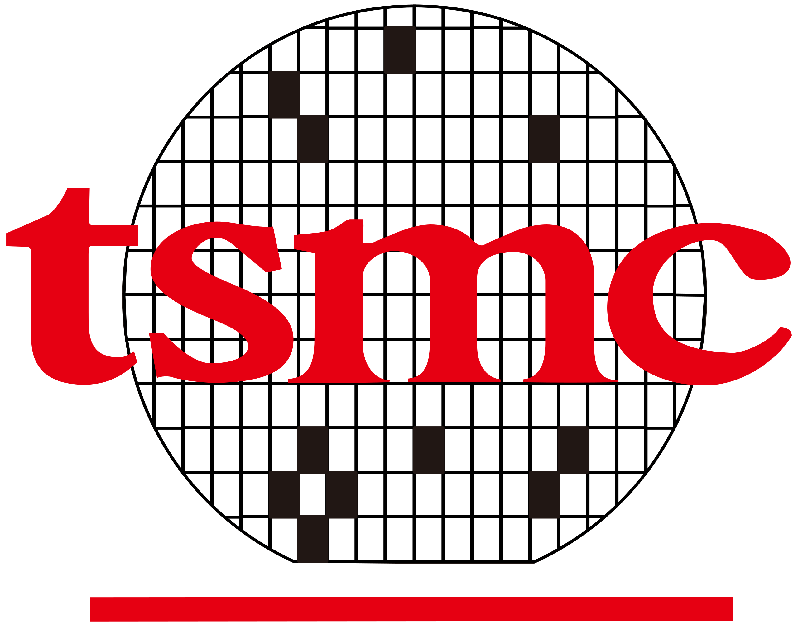

Chen-Wei Chang
AI/ML Application Engineer 

I am currently working at TSMC in the VNAP department as an AI/ML Application Engineer. I received my Master's degree from the Institute of AI Innovation at National Yang Ming Chiao Tung University, advised by Prof. Yu-Lun Liu and Prof. Jiun-Long Huang, and my Bachelor's degree in Electronic Engineering from National Taipei University of Technology. My research interest focuses on Camera ISP, Generative AI, and 3D scene reconstruction.